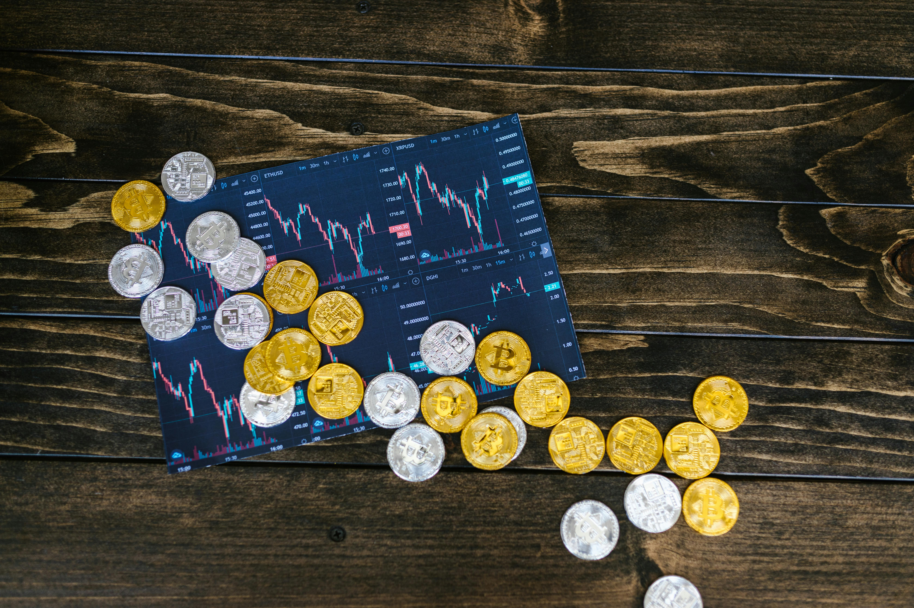
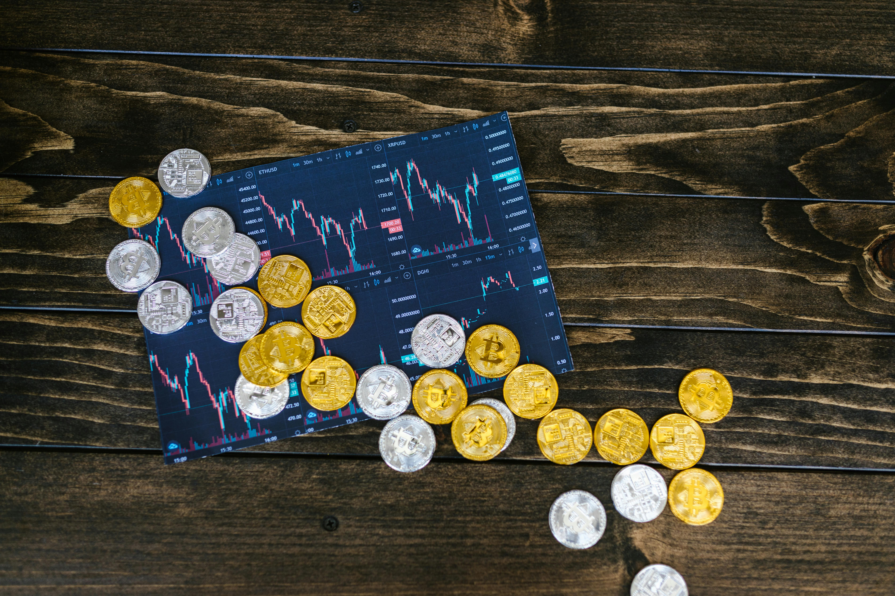
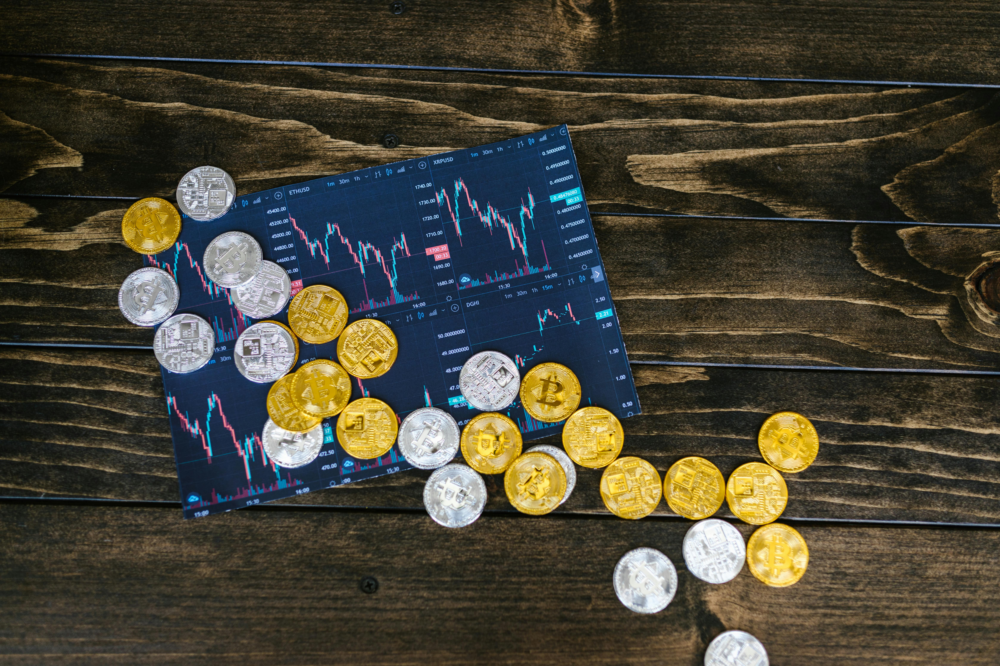

Definição de blockchain blockchain é um livro de registros, compartilhado e imutável, que facilita o processo de gravação de transações e rastreamento de ativos em uma rede de negócios. Um ativo pode ser tangível (uma casa, um carro, dinheiro, terras) ou intangível (propriedade intelectual, patentes, direitos autorais e marcas). Praticamente qualquer item de valor pode ser rastreado e negociado em uma rede de blockchain, o que reduz os riscos e os custos para todos os envolvidos.
as empresas funcionam com base em informações. Quanto mais rápido ele for recebido e quanto mais preciso for, melhor. A blockchain é ideal para entregar essas informações, pois ela fornece informações imediatas, compartilhadas e completamente transparentes armazenadas em um livro de registros imutável que pode ser acessado apenas por membros da rede autorizada. Uma rede blockchain pode acompanhar pedidos, pagamentos, contas, produção e muito mais. Como os membros compartilham uma visualização única dos fatos, é possível ver todos os detalhes de uma transação de ponta a ponta, proporcionando maior confiança e eficiência, além de novas oportunidades.
Todas as transações registradas por meio do blockchain são públicas e imutáveis. Isso significa que os investidores podem verificar facilmente todas as transações e atividades em tempo real, aumentando a transparência e a confiança no mercado, garantindo uma gestão de operações clara e eficiente.
